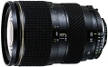

器材库 > 35mm画幅AF变焦镜头 > AT-X 270AF 28-70/2.6-2.8 Pro

详细规格
镜头类型
标准变焦镜头
发布日期
未知
焦距
28mm-70mm
最大光圈
f/2.6-2.8
最小光圈
f/22
视角（对角）
75.3-34.3
镜头结构
16片/12组
最近对焦距离
70cm
驱动马达
AF马达
滤镜口径
77mm
镜头卡口
Canon EF, Minolta/Konica-Minolta/Sony AF, Nikon AF, Pentax AF
防抖
否
颜色
黑色
尺寸
79.5 x 109.5mm
重量
760g
附件
MH773
zyp19472015-09-10 10:484.67 分
操作性 4.00耐用性 5.00性价比 5.00解像力 4.50色彩还原 4.50机械结构 5.00
anminghu2012-06-16 10:444.08 分
操作性 4.50耐用性 4.50性价比 4.00解像力 3.00色彩还原 4.00机械结构 4.50
tuniao2012-01-05 21:464.58 分
操作性 4.50耐用性 5.00性价比 5.00解像力 4.00色彩还原 4.50机械结构 4.50
修己安人2010-09-26 22:364.58 分
操作性 4.50耐用性 5.00性价比 5.00解像力 4.50色彩还原 4.50机械结构 4.00
剑宗一刻2010-05-27 21:224.83 分
操作性 5.00耐用性 5.00性价比 5.00解像力 4.50色彩还原 4.50机械结构 5.00
产品图 / 样片
外观图
评测 / 相关文章
该产品暂无存档的评测文章